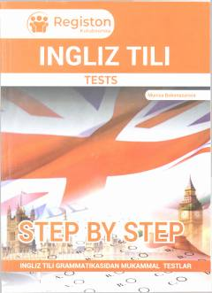

ITIngliz tili fanidan bosqichma-bosqich tuzilgan testlar va grammatik topshiriqlar to'plami.
Ushbu qo'llanma umumiy o'rta ta'lim maktablari o'quvchilari, akademik litsey va kollej o'quvchilari hamda OTMga tayyorgarlik ko'rayotgan abituriyentlar uchun ingliz tilidan mukammal testlar to'plamini o'z ichiga oladi. Kitobdagi testlar osonlik darajasidan qiyinlik darajasiga qarab bosqichma-bosqich tuzilgan bo'lib, mavzularni mustahkamlashga yordam beradi. Shuningdek, to'plamda DTM darajasidagi testlar va maxsus vaqt sinovlari ham taqdim etilgan.